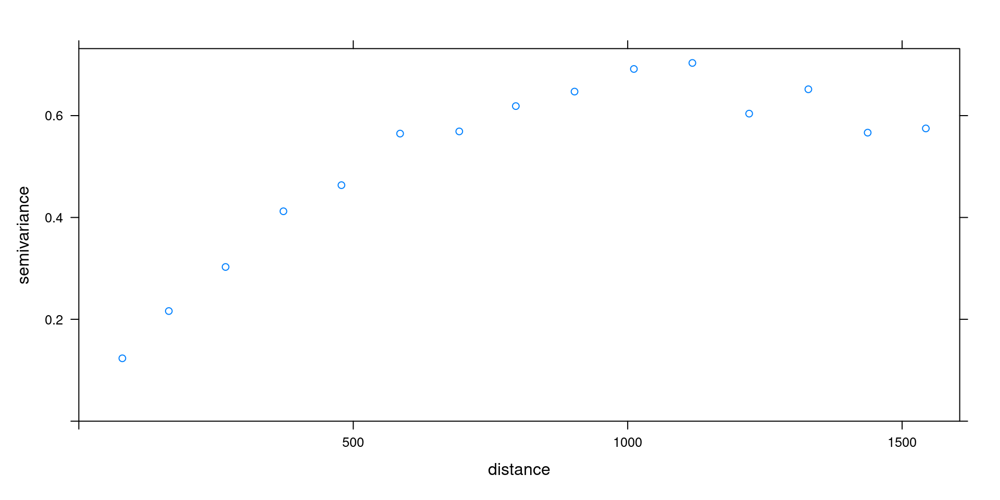
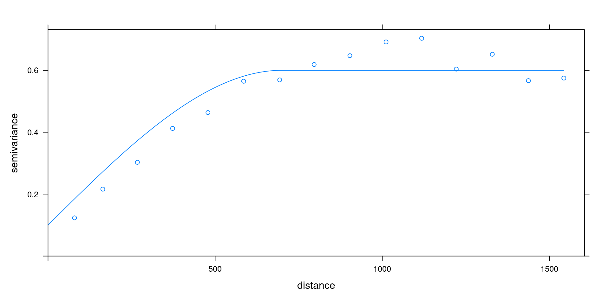
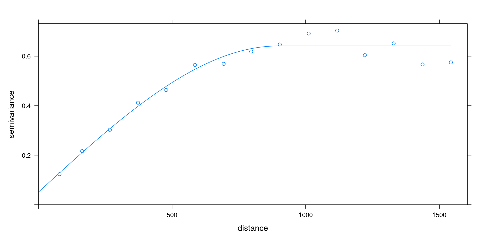

# $digits
# [1] 33 Optimization: linear and non-linear
3.1 linear systems
Take \(x_1\) the example
\[ \begin{array}{ll} a x_{11} + b x_{12} & = y_1 \\ a x_{21} + b x_{22} & = y_2 \end{array} \]
with the \(x\) and \(y\) values known, and \(a\) and \(b\) unknown. This is similar to fitting a straight line through two points: let \((x_1,y_1)\) be the first point and \((x_2,y_2)\) be the second, then \[ \begin{array}{ll} a + b x_1 & = y_1 \\ a + b x_2 & = y_2 \end{array} \] The approach is substition: rewrite one equations such that isolates \(a\) or \(b\), and substitute that in the second.
Matrix notation
We can rewrite \[ \begin{array}{ll} a x_{11} + b x_{12} & = y_1\\ a x_{21} + b x_{22} & = y_2 \end{array} \] as the matrix product \[ \left[ \begin{array}{ll} x_{11} & x_{12}\\ x_{21} & x_{22} \end{array} \right] \left[ \begin{array}{l} a \\ b \end{array} \right] = \left[ \begin{array}{l} y_1 \\ y_2 \end{array} \right] \] or \[Xa = y\]
Matrix transposition
The transpose of a matrix is the matrix formed when rows and columns are reversed. If \[A = \left[ \begin{array}{rr} 1 & 4 \\ 2 & -1 \\ 8 & 9 \\ \end{array} \right] \] then it’s transpose, \[ A' = \left[ \begin{array}{rrr} 1 & 2 & 8 \\ 4 & -1 & 9 \\ \end{array} \right] \] (and may be written as \(A^T\))
Matrix inverse and identity
The identity matrix is square (nr of rows equals nr of columns), has ones on the diagona (for which the row number equals the column number) and zeroes elsewhere. E.g. the \(3 \times 3\) identity \[ I = \left[ \begin{array}{lll} 1 & 0 & 0 \\ 0 & 1 & 0 \\ 0 & 0 & 1 \\ \end{array} \right] \] The inverse of a square matrix \(X\), \(X^{-1}\), is defined by the products \[X^{-1}X = I\] and \[X X^{-1}=I\]
Suppose we have \(n\) equations with \(p\) unknowns: \[ \begin{array}{cccccc} a_1 x_{11} + a_2 x_{12} + & ... & + & a_p x_{1p} & = & y_1 \\ a_1 x_{21} + a_2 x_{22} + & ... & + & a_p x_{2p} & = & y_2 \\ \vdots & \ddots & & \vdots & & \vdots \\ a_1 x_{n1} + a_2 x_{n2} + & ... & + & a_p x_{np} & = & y_n \end{array} \] we can rewrite this in matrix notation as \(Xa=y\), with \(x_{ij}\) corresponding to element \((i,j)\) (row i, column j) in \(X\), having \(n\) rows and \(p\) columns; \(a\) and \(y\) column vectors having \(p\) and \(n\) elements, respectively. Now, \(X\) and \(y\) are known, and \(a\) is unknown. \(a\) Solutions:
- if \(p > n\), there is no single solution
- if \(p = n\) and \(X\) is not singular, then \(a = X^{-1}y\)
- if \(p < n\) we have an overdetermined system, and may e.g. look for
a least square (best approximating) solution.
3.2 Linear least squares solution
If \(p < n\), a solution usually does not exist: try fitting a straight line through three or more arbitrary points.
Now rewrite \(Xa = y\) as \(y=Xb+e\), with \(e\) the distance (in \(y\)-direction) from the line. If we want to minimize the sum of squared distances, then we need to find \(b\) for which \(R=\sum_{i=1}^n e_i^2\) is minimum. In matrix terms, \(R = (y-Xb)'(y-Xb)\) with \('\) denoting transpose (row/col swap). \[\frac{\delta R}{\delta b} = 0\] \[\frac{\delta (y-Xb)'(y-Xb)}{\delta b} = 0\] \[\frac{\delta (y'y - (Xb)'y- y'(Xb) + (Xb)'Xb)}{\delta b} = 0\] now you should first note that \((Xb)'=b'X'\), and second that \(b'X'y=y'Xb\) because these are scalars. Then, \[-2X'y + 2X'Xb = 0\] \[X'Xb = X'y\] \[b = (X'X)^{-1}X'y\] this yields the least squares solution for \(b\); the solution equations are called the normal equations.
The practice of solving systems
when we write \[A x = b\] with known \(A\) and \(b\) and unknown \(x\), the solution is \[x = A^{-1}b\] In practice however, we do not need to compute \(A^{-1}\), but can directly solve for \(x\). This is much cheaper. ::: {.cell}
m=matrix(0,3000,3000)
diag(m)=1
system.time(x <- solve(m))
# user system elapsed
# 4.96 1.11 0.62
system.time(x <- solve(m,rep(0,3000)))
# user system elapsed
# 1.204 0.635 0.147:::
X=cbind(c(1,1,1),c(1,2,3))
X
# [,1] [,2]
# [1,] 1 1
# [2,] 1 2
# [3,] 1 3
y = c(1,0,2)
solve(t(X) %*% X, t(X) %*% y)
# [,1]
# [1,] 0.0
# [2,] 0.5
plot(X[,2], y, xlim = c(0,3), asp = 1)
abline(lm(y~X[,2]))
lm(y~X[,2])
#
# Call:
# lm(formula = y ~ X[, 2])
#
# Coefficients:
# (Intercept) X[, 2]
# -3.85e-16 5.00e-013.3 Non-linear Optimization
- one-dimensional search on a unimodal function: golden search
- non-linear least squares: the Gauss Newton algorithm
- probabilistic methods: global search
- Metropolis-Hastings
- Simulated Annealing
Golden search
Golden ratio: \[ \frac{x_1}{x_2} = \frac{x_2}{x_1+x_2} \] Solution (check): if \(x_1=1\), then \(x_2\approx1.618\) or \(x_2\approx0.618\)
Found in: art, sculpture, geometry (pentagrams), Egyptian pyramides, architecture, nature, A4 paper, …
Minimum outside current section
Minimum inside current section
the algorithm
Recursive zooming:
- find three GR points, a, b and c such that the minimum lies within a and c
- put a point d in the largest section according to GR, with the smallest interval closest to the smallest value
- (In case of adbc) determine whether the mininum is between a and b or d and c
- continue with either adb or dbc as if it were abc, unless we’re sufficiently close (in terms of our goal, or of numerical resolution)
Combined linear and golden search
Spherical variogram with nugget has three parameters: nugget \(c_0\), (partial) sill \(c_1\) and range \(a\): \[ \gamma(h) = \left\{ \begin{array}{ll} 0 & \mbox{if}\ \ h = 0 \\ c_0 + c_1 f(a,h) & \mbox{if}\ \ h > 0 \\ \end{array} \right. \] with \[f(a, h)= \left\{ \begin{array}{ll} \frac{3h}{2a}-\frac{1}{2}(\frac{h}{a})^3 & \mbox{if} \ \ 0 \le h \le a \\ 1 & \mbox{if} \ \ h > a \\ \end{array} \right. \]
Approach:
Provide an initial estimate \(a_0\); then iterate: 1. given current fit for \(a\), fit the linear coefficients \(c_0\) and \(c_1\) 2. given this fit, do golden search for \(a\) until convergence (vector \((a,c_0,c_1)\) does not move).
library(sp)
data(meuse)
coordinates(meuse) = ~x+y
library(gstat)
v = variogram(log(zinc)~1, meuse)
m = vgm(0.5, "Sph", 700, 0.1)
plot(v)
plot(v, vgm(0.5, "Sph", 700, 0.1))
plot(v, fit.variogram(v, vgm(0.5, "Sph", 700, 0.1)))
3.4 Gauss-Newton
Golden search may be used for any criterion, e.g. \(f(x)=\sum_{i=1}^n g_i(x)^p\) for any chosen \(p\). If we limit ourselves to least squares (i.e., \(p=2\)) and want to generalize this for higher dimensional (i.e., multiple parameter) \(x\) (e.g. \(x=[x_1,...,x_q]'\)) we may use the Gauss-Newton algorithm (non-linear least squares).
the Gauss-Newton algorithm
Problem: given a model \(y=g(X,\theta)+e\) find \[\mbox{min}_\theta \sum (y - g(X,\theta))^2\] Let \(f_i(\theta)=y_i - g(X_i,\theta)\), so we minimize \(R=\sum_{i=1}^n (f_i(\theta))^2\)
This is a problem from space \((1 \times n)\) to \((1 \times m)\)
Given a starting value \(\theta^0\) we search the direction of steepest descent in terms of \(R\), using first order derivatives of \(R\) towards \(\theta\). By iteration, from \(\theta^k\) we find \(\theta^{k+1}\) by \[\theta^{k+1}=\theta^k + \delta^k\] until we have convergence.
Let the Jakobian be \[ J_f(\theta^k) = \left[ \begin{array}{ccccc} \frac{\delta f_1(\theta^k)}{\delta\theta_1} & ... & \frac{\delta f_1(\theta^k)}{\delta\theta_m} \\ \vdots & \ddots & \vdots \\ \frac{\delta f_n(\theta^k)}{\delta\theta_1} & ... & \frac{\delta f_n(\theta^k)}{\delta\theta_m} \\ \end{array} \right] \] In \[\theta^{k+1}=\theta^k + \delta^k\] we find \(\delta^k\) by solving \[ J_f(\theta_k)'J_f(\theta_k) \delta^k = - J_f(\theta_k)'f(\theta^k) \] What if \(\delta f_n(\theta^k)/ \delta \theta\) is unknown?
Gauss-Newton and the Normal equations
Recall that in multiple linear regression, with \(y=X\theta+e\) the solution is given by the normal equations \[X'X\theta = X'y\] Note that here, the Jacobian of \(y-X\theta\) is \(-X\), so if we take (arbitrarily) \(\theta_0 = (0,0,...,0)'\), then \[ J_f(\theta_k)'J_f(\theta_k) \delta^k = - J_f(\theta_k) f(\theta^k) \] yields after one step the final solution \(\delta^1=\theta\), as \((-X)'(-X)\delta=X'y\).
Other starting points yield the same solution for \(\theta\).
Further steps will not improve it (i.e., yield \(\delta^k=0\)).
See also the Gradient descent wikipedia site.